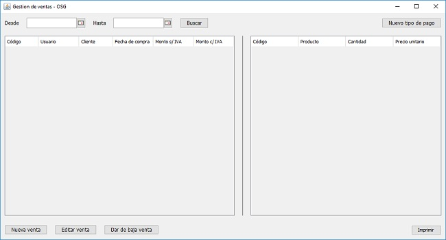
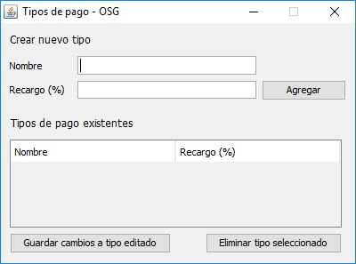

Nueva venta
Asi como el módulo compras gestiona las compras, esté modulo de igual aspecto que el mencionado, gestiona las ventas realizadas a los clientes

El inicio de la ventana muestra una tabla donde se listaran las ultimas ventas realizadas y, en la parte derecha se motrará un detalle de los productos que contiene esa venta. En el sector superior podrá establecer un rango de fechas entre los cuales listar las ventas realizadas. En la parte inferiór podra realizar respectivamente una nueva venta, al hacer clic en "Editar venta" se abrirá la ventana para poder editar una venta realizada en caso de haber surgido una confusión al momento de crearla. Con el botón "Eliminar venta" se eliminará la compra seleccionada en la tabla. Adicionalmente se incluye el botón "Nuevo tipo de pago" donde podra agregar un nuevo tipo que será útil al momento de una nueva venta.
Tipo de pago
Los tipos de pago se daran de alta con el botón "Nuevo tipo de pago", ubicado en la esquina superior derecha de la ventana

Aqui además de mostrarse los tipos de pago existentes usted podrá crear un nuevo tipo. Simplemente debera establecer un nuevo nombre por ejemplo "Tarjeta de crédito NBSF" con el porcentaje de recargo deseado, presione "Agregar" para crear este tipo de pago. Debajo del area de creación se mostraran los tipos de pago existentes donde podra editar (realizar doble clic sobre el campo a editar, una vez terminado presionar "Guardar cambios a tipo editado") o eliminar dichos tipos de pago (seleccione el tipo deseado con un clic y luego presione "Eliminar tipo deseado" para realizar la supresión).
Alta/Edición de ventas

Al hacer clic en "Nueva venta" se abrirá la ventana de nueva venta, la que además es accesible desde el menú principal del sistema, donde deberá seleccionar un cliente (o crear uno nuevo con el botón "Nuevo cliente", luego seleccionar los productos que este haya comprado y la cantidad, para quitar algún producto, deberá presionar "Quitar producto seleccionado" teniendo una fila seleccionada en la tabla. Luego
Para la edición de una compra en caso de haber ingresado erroneamente un dato, simplemente deberá seleccionar una compra en la tabla (resaltada con auzl) y luego presionar "Editar compra" se abrirá la misma ventana que se muestra arriba de este parrafo, con los campos ya rellenados, solo deberá cambiar los campos deseados, una vez terminado presionará el botón "Guardar" para actualizar los productos y el stock, esta última acción sirve tanto para la nueva compra como para la edición.